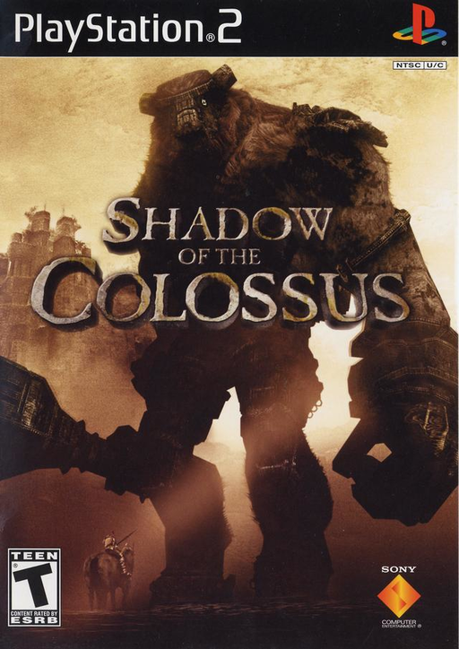
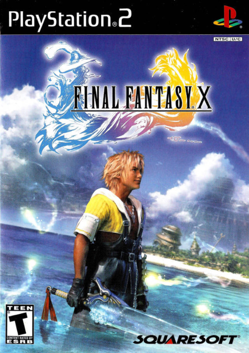
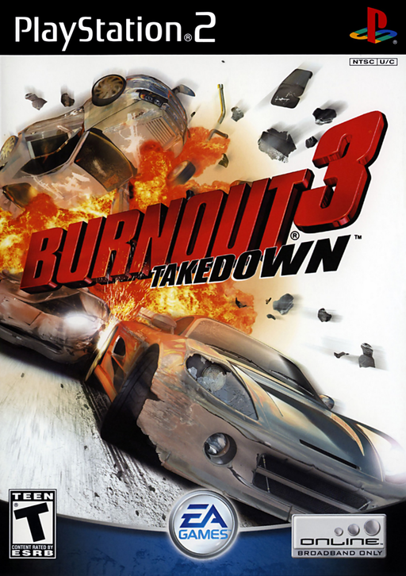
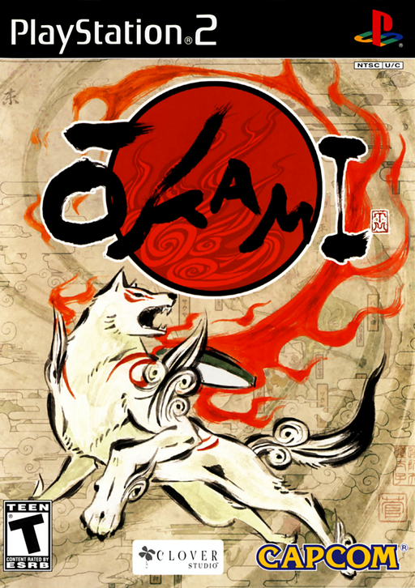
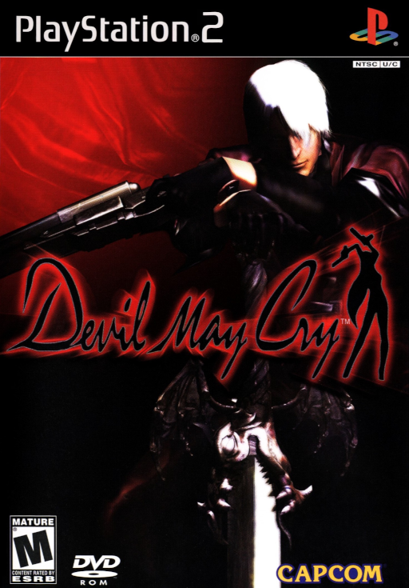
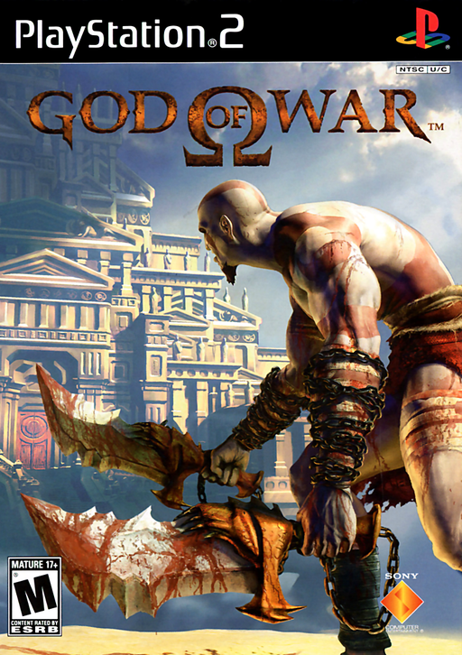
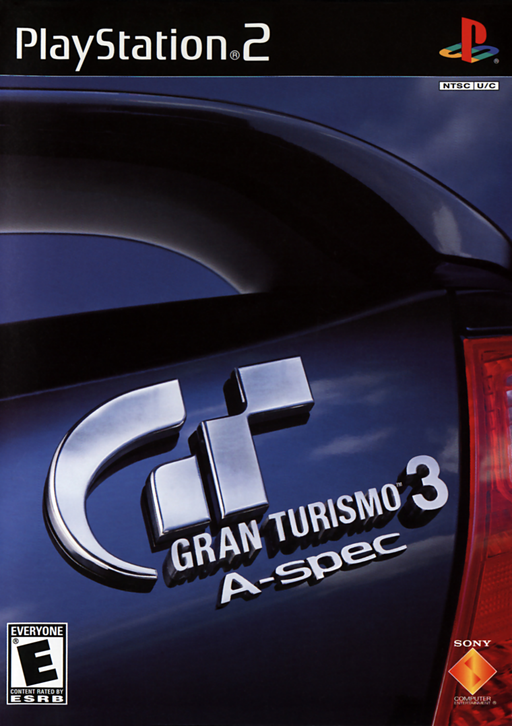
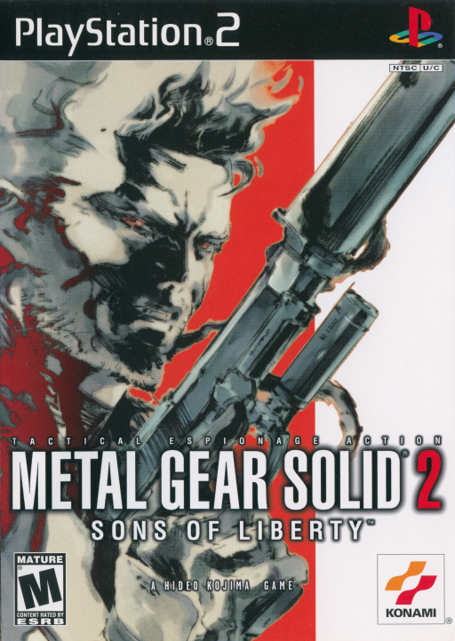
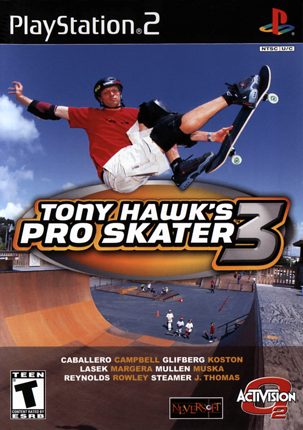
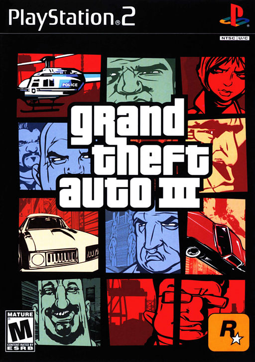

GENERACION 6 · LA CONSOLA MAS VENDIDA DE LA HISTORIA
PLAYSTATION 2 TOP MUNDIAL
LOS 10 MEJORES SEGUN LA CRITICA
02
CONSENSO CRITICO 2026
TOP 10 MUNDIAL
Del #10 al #1: los juegos que definieron la consola mas vendida de la historia segun la critica y el legado que dejaron. Empezamos desde abajo.
03
#10
TOP

PLAYSTATION 2
TARROVISIONCH 10
NO SIGNAL
Inserta gameplay aqui
SHADOW OF THE COLOSSUS
PLAYSTATION 2 · 2005 · SONY COMPUTER ENTERTAINMENT
▶ POR QUEUn heroe, un caballo y dieciseis colosos gigantes. Team Ico convirtio un juego de jefes en ejemplo de videojuego como arte, con 91 en Metacritic.
04
#9
TOP

PLAYSTATION 2
TARROVISIONCH 09
NO SIGNAL
Inserta gameplay aqui
FINAL FANTASY X
PLAYSTATION 2 · 2001 · SQUARE
▶ POR QUEEl primer Final Fantasy con voces y escenarios en 3D. Famitsu le dio 39 sobre 40 y vendio mas de 8 millones de copias.
05
#8
TOP

PLAYSTATION 2
TARROVISIONCH 08
NO SIGNAL
Inserta gameplay aqui
BURNOUT 3: TAKEDOWN
PLAYSTATION 2 · 2004 · ELECTRONIC ARTS
▶ POR QUECarreras arcade de Criterion donde chocar al rival es la estrategia. 93 en Metacritic para PS2, segundo mejor juego de 2004 segun su nota.
06
#7
TOP

PLAYSTATION 2
TARROVISIONCH 07
NO SIGNAL
Inserta gameplay aqui
OKAMI
PLAYSTATION 2 · 2006 · CAPCOM
▶ POR QUEUn lobo blanco, un pincel celestial y una estetica de tinta japonesa. 93 en Metacritic y Juego del Año 2006 para IGN.
07
#6
TOP

PLAYSTATION 2
TARROVISIONCH 06
NO SIGNAL
Inserta gameplay aqui
DEVIL MAY CRY
PLAYSTATION 2 · 2001 · CAPCOM
▶ POR QUEDante, espadas, pistolas y combos con estilo. Nacio como idea para un Resident Evil y fundo el genero de accion estilizada. 94 en Metacritic.
08
#5
TOP

PLAYSTATION 2
TARROVISIONCH 05
NO SIGNAL
Inserta gameplay aqui
GOD OF WAR
PLAYSTATION 2 · 2005 · SONY COMPUTER ENTERTAINMENT
▶ POR QUEKratos, las Blades of Chaos y combates a toda escala. 94 en Metacritic: abrio una saga que pasaria de la mitologia griega a la nordica.
09
#4
TOP

PLAYSTATION 2
TARROVISIONCH 04
NO SIGNAL
Inserta gameplay aqui
GRAN TURISMO 3: A-SPEC
PLAYSTATION 2 · 2001 · SONY COMPUTER ENTERTAINMENT
▶ POR QUEEl simulador de manejo que estreno la PS2. 95 en Metacritic, el exclusivo mas vendido de la consola con mas de 14 millones de copias.
10
#3
PODIO

PLAYSTATION 2
TARROVISIONCH 03
NO SIGNAL
Inserta gameplay aqui
METAL GEAR SOLID 2: SONS OF LIBERTY
PLAYSTATION 2 · 2001 · KONAMI
▶ POR QUEStealth de Hideo Kojima con entornos de varios niveles y enemigos que actuan en escuadra. 96 en Metacritic, el exclusivo de PS2 mejor puntuado.
11
#2
PODIO

PLAYSTATION 2
TARROVISIONCH 02
NO SIGNAL
Inserta gameplay aqui
TONY HAWK'S PRO SKATER 3
PLAYSTATION 2 · 2001 · ACTIVISION
▶ POR QUESkate arcade de Neversoft con trucos encadenados y online en PS2. 97 en Metacritic y un 10 perfecto de GameSpot.
12
#1
EL TRONO

PLAYSTATION 2
TARROVISIONCH 01
NO SIGNAL
Inserta gameplay aqui
GRAND THEFT AUTO III
PLAYSTATION 2 · 2001 · ROCKSTAR GAMES
▶ EL TRONOEl mundo abierto en 3D que cambio la industria. 97 en Metacritic, empatado como el mejor puntuado de PS2.
13
ANALISIS DEL TOP
EL VEREDICTO
Los diez superan el 90 en Metacritic y cuatro llegan a 95 o mas. Hay mundos abiertos, sigilo, carreras, accion, rol y arte, casi todos de 2001 a 2006: la epoca en que la PS2 definio lo que podia hacer una consola.
14
TU TURNO
¿Y TU TOP?
¿Cual es tu juego de PS2 favorito de esta lista? ¿Que juego le faltaria al top segun tu criterio? Dejalo en los comentarios. Suscribete a Retrotarros.